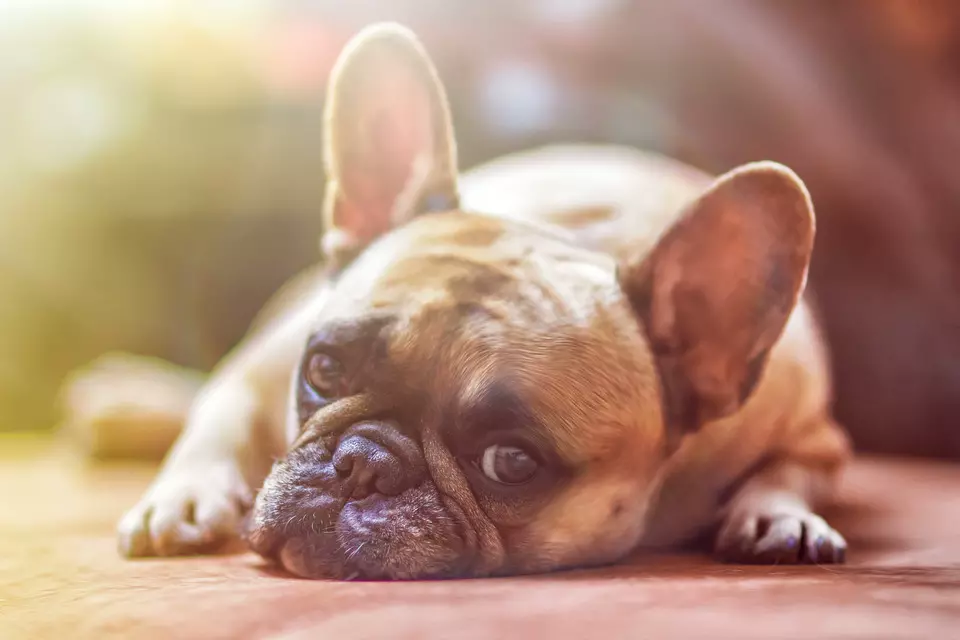

- 

-


Perros de la semana
Buddy is a 5-year-old golden retriever who loves playing catch and taking long walks on the beach.
Buddy is a 5-year-old golden retriever who loves playing catch and taking long walks on the beach.
Adopt me!Voluntarios
"¿Te encantan los perros y quieres hacer una diferencia en sus vidas? ¡Únete a nuestro equipo de voluntarios en nuestro refugio de perros Colitas Felices! Como voluntario, tendrás la oportunidad de trabajar directamente con perros de todos los tamaños y razas, y ayudar a proporcionarles el amor y cuidado que necesitan mientras esperan encontrar su hogar para siempre.
Learn More